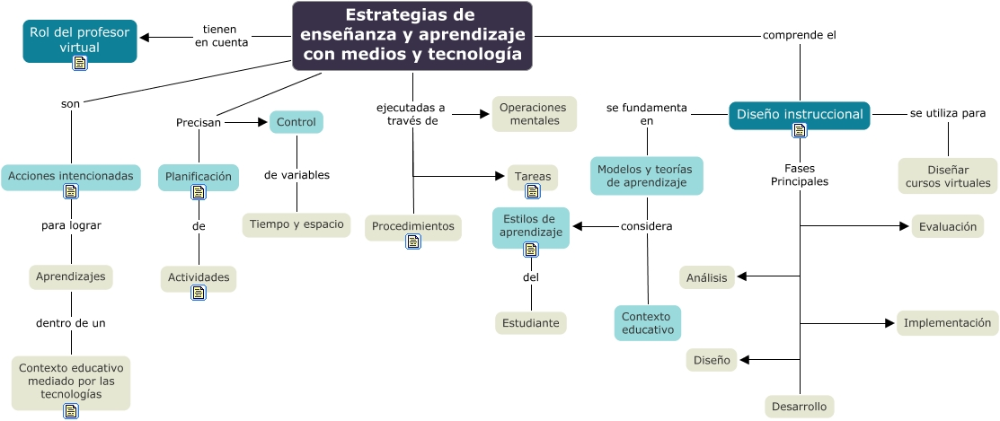

WARNING:
JavaScript is turned OFF. None of the links on this concept map will
work until it is reactivated.
If you need help turning JavaScript On, click here.
Este Cmap, tiene informaci칩n relacionada con: mapa_docencia_virtual_unid_2.cmap, Estilos de aprendizaje del Estudiante, Estrategias de ense침anza y aprendizaje con medios y tecnolog칤a ejecutadas a trav칠s de Operaciones mentales, Modelos y teor칤as de aprendizaje considera Contexto educativo, Estrategias de ense침anza y aprendizaje con medios y tecnolog칤a ejecutadas a trav칠s de Procedimientos, Estrategias de ense침anza y aprendizaje con medios y tecnolog칤a ejecutadas a trav칠s de Tareas, Estrategias de ense침anza y aprendizaje con medios y tecnolog칤a Precisan Planificaci칩n, Estrategias de ense침anza y aprendizaje con medios y tecnolog칤a son Acciones intencionadas, Estrategias de ense침anza y aprendizaje con medios y tecnolog칤a tienen en cuenta Rol del profesor virtual, Modelos y teor칤as de aprendizaje considera Estilos de aprendizaje, Aprendizajes dentro de un Contexto educativo mediado por las tecnolog칤as, Dise침o instruccional Fases Principales Evaluaci칩n, Acciones intencionadas para lograr Aprendizajes, Planificaci칩n de Actividades, Dise침o instruccional Fases Principales Dise침o, Dise침o instruccional se utiliza para Dise침ar cursos virtuales, Control de variables Tiempo y espacio, Dise침o instruccional se fundamenta en Modelos y teor칤as de aprendizaje, Dise침o instruccional Fases Principales Implementaci칩n, Dise침o instruccional Fases Principales An치lisis, Estrategias de ense침anza y aprendizaje con medios y tecnolog칤a comprende el Dise침o instruccional
